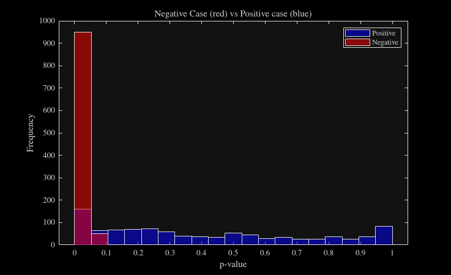
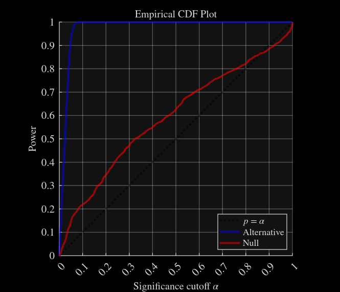
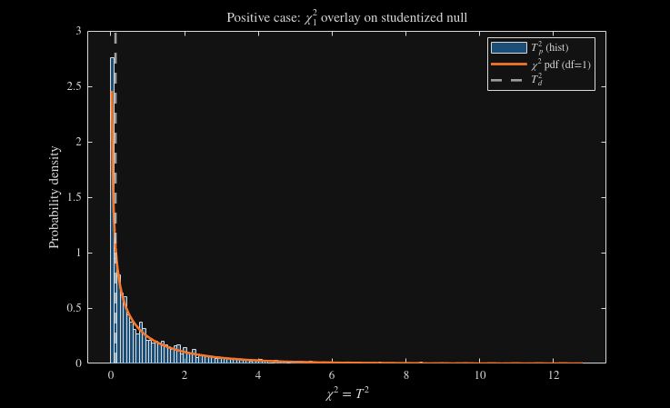

Contents
close all;
pVals_Positive = zeros(N, 1);
pVals_Negative = zeros(N, 1);
levels = {[1, 2, 3]};
nse = 1;
reps_pos = 40;
vars_pos = 300;
N = 1000;
rng('shuffle');
plot_idx = randi(N);
Loop through N simulations
for i = 1:N
[X1, X2, F1, F2, szPos] = simul_data('pos', levels, reps_pos, vars_pos, nse, 0.4, 'both');
[~, parglmo1] = parglm(X1 - mean(X1), F1, 'Preprocessing', 0);
[~, parglmo2] = parglm(X2 - mean(X2), F2, 'Preprocessing', 0);
[p_Pos, ~, ~, ~, Fd_pos,Fp_pos] = fbd(parglmo1, parglmo2, 2000);
[X1_neg, X2_neg, F1_neg, F2_neg, szNeg] = simul_data('neg', levels, reps_pos, vars_pos, nse, 0.4, 'both');
[~, parglmo1_neg] = parglm(X1_neg - mean(X1_neg), F1_neg, 'Preprocessing', 0);
[~, parglmo2_neg] = parglm(X2_neg - mean(X2_neg), F2_neg, 'Preprocessing', 0);
[p_Neg, ~, ~, ~, Fd_neg,Fp_neg] = fbd(parglmo1_neg, parglmo2_neg, 2000);
fprintf('Simulation %d complete\n',i)
if i == plot_idx
Fp_pos_plt = Fp_pos;
Fp_neg_plt = Fp_neg;
Fd_pos_plt = Fd_pos;
Fd_neg_plt = Fd_neg;
disp(p_Pos)
end
pVals_Negative(i) = p_Neg;
pVals_Positive(i) = p_Pos;
end
------------------ Plot results ------------------
set(groot,'defaultTextInterpreter','latex');
set(groot,'defaultLegendInterpreter','latex');
set(groot,'defaultAxesTickLabelInterpreter','latex');
figure('Name','Distribution of p-values across simulations');
hold on; box on;
all_p = [pVals_Positive(:); pVals_Negative(:)];
edges = linspace(min(all_p), max(all_p), 20);
histogram(pVals_Positive, edges, 'FaceColor', 'b', 'FaceAlpha', 0.5);
histogram(pVals_Negative, edges, 'FaceColor', 'r', 'FaceAlpha', 0.5);
xlabel('p-value');
ylabel('Frequency');
title('Negative Case (red) vs Positive case (blue)');
legend({'Positive','Negative'});
box on;
hold off;
figure('Name', 'Empirical CDF Plot', 'Units','inches','Position',[1 1 7 6]);
hold on;
alpha = linspace(0,1,2000);
R_alt = arrayfun(@(a) mean(pVals_Positive <= a), alpha);
R_nul = arrayfun(@(a) mean(pVals_Negative <= a), alpha);
plot(alpha, alpha, 'LineWidth', 3, 'Color', [0,0,0,0.5],'LineStyle',':');
plot(alpha, R_nul, 'LineWidth', 3, 'Color', [0 0 1 0.5]);
plot(alpha, R_alt, 'LineWidth', 3, 'Color', [1 0 0 0.5]);
xlabel('Significance cutoff $\alpha$');
ylabel('Power');
legend('$p$ = $\alpha$','Alternative', 'Null', 'Location', 'southeast');
title('Empirical CDF Plot')
axis equal
grid on;
ax = gca;
ax.XGrid = 'on';
ax.YGrid = 'on';
ax.GridAlpha = 0.3;
ax.MinorGridLineStyle = '-';
ax.XTick = 0:0.1:1;
ax.YTick = 0:0.1:1;
xlim([0,1])
ylim([0,1])
set(gca, 'FontName', 'Arial', ...
'FontSize', 16, ...
'LineWidth', 1, ...
'Box', 'off');
ax = gca;
ax.XLabel.FontSize = 15;
ax.YLabel.FontSize = 15;
ax.Title.FontSize = 15;
lgd = legend;
lgd.FontSize = 14;
 
===================== POSITIVE CASE: Chi-square (df=1) =====================
figure(); hold on; box on;
histogram(Fp_pos_plt, 'Normalization','pdf', 'NumBins',150, 'FaceAlpha',0.5);
x = linspace(0, max(Fp_pos_plt), 500);
plot(x, chi2pdf(x,1), 'LineWidth',2);
xline(Fd_pos_plt, '--', 'LineWidth',2);
xlabel('$\chi^2 = T^2$');
ylabel('Probability density');
title('Positive case: $\chi^2_1$ overlay on studentized null');
legend({'$T_p^2$ (hist)','$\chi^2$ pdf (df=1)','$T_d^2$'}, 'Location','best');
hold off;

===================== NEGATIVE CASE: Chi-square (df=1) =====================
figure(); hold on; box on;
histogram(Fp_neg_plt, 'Normalization','pdf', 'NumBins',150, 'FaceAlpha',0.5);
x = linspace(0, max(Fp_neg_plt), 500);
plot(x, chi2pdf(x,1), 'LineWidth',2);
xline(Fd_neg_plt, '--', 'LineWidth',2);
xlabel('$\chi^2 = T^2$');
ylabel('Probability density');
title('Negative case: $\chi^2_1$ overlay on studentized null');
legend({'$T_p^2$ (hist)','$\chi^2$ pdf (df=1)','$T_d^2$'}, 'Location','best');
hold off;
------------------ Helper Functions ------------------
function [X1, X2, F1, F2, sz] = simul_data(mode, levels, reps_pos, vars_pos, nse, splitFrac, splitMode)
if nargin < 7 || isempty(splitMode), splitMode = 'both'; end
if nargin < 6 || isempty(splitFrac), splitFrac = 0.4; end
mode = lower(string(mode));
if mode == "positive", mode = "pos"; end
if mode == "negative", mode = "neg"; end
switch mode
case "pos"
[X, F] = local_sim_one(levels, reps_pos, vars_pos, nse);
rp = randperm(size(X,1));
X = X(rp,:);
F = F(rp,:);
[X1, X2] = blockDiagonalSampling(X, splitFrac, splitMode);
F1 = F(1:size(X1,1), :);
F2 = F(size(X1,1)+1:end, :);
sz = struct();
sz.mode = 'pos';
sz.X_full = size(X);
sz.F_full = size(F);
sz.X1 = size(X1); sz.X2 = size(X2);
sz.F1 = size(F1); sz.F2 = size(F2);
case "neg"
reps1 = floor(splitFrac * reps_pos);
vars1 = floor(splitFrac * vars_pos);
[X1, F1] = local_sim_one(levels, reps1, vars1, nse);
reps2 = floor((1 - splitFrac) * reps_pos);
vars2 = floor((1 - splitFrac) * vars_pos);
[X2, F2] = local_sim_one(levels, reps2, vars2, nse);
sz = struct();
sz.mode = 'neg';
sz.X1 = size(X1); sz.X2 = size(X2);
sz.F1 = size(F1); sz.F2 = size(F2);
sz.reps1 = reps1; sz.vars1 = vars1;
sz.reps2 = reps2; sz.vars2 = vars2;
otherwise
error('simul_data:badMode', 'mode must be ''pos'' or ''neg''.');
end
end
function [X, F] = local_sim_one(levels, reps, vars, nse)
F = createDesign(levels,'Replicates',reps);
X = zeros(size(F,1),vars);
for ii = 1:length(levels{1})
X(find(F(:,1) == levels{1}(ii)),:) = randn(length(find(F(:,1) == levels{1}(ii))),vars) ...
+ nse.*repmat(randn(1,vars),length(find(F(:,1) == levels{1}(ii))),1);
end
end
function [block1, block2] = blockDiagonalSampling(X, p, mode)
if nargin < 3
mode = 'both';
end
[m, n] = size(X);
switch lower(mode)
case 'rows'
r1 = round(m * p);
block1 = X(1:r1, :);
block2 = X(r1+1:end, :);
case 'cols'
c1 = round(n * p);
block1 = X(:, 1:c1);
block2 = X(:, c1+1:end);
case 'both'
r1 = round(m * p);
c1 = round(n * p);
block1 = X(1:r1, 1:c1);
block2 = X(r1+1:end, c1+1:end);
otherwise
error('Unknown mode. Please use ''rows'', ''cols'', or ''both''.');
end
end
function [p,T1oe,T1r,T2oe,Td,Tp] = fbd(parglmoA, parglmoB, n_perms)
X1 = parglmoA.data;
X2 = parglmoB.data;
F1 = parglmoA.design;
F2 = parglmoB.design;
[F1,idx] = sort(F1,"ascend");
X1 = X1(idx,:);
Z1 = parglmoA.D(idx,:);
[F2,idx] = sort(F2,"ascend");
X2 = X2(idx,:);
Z2 = parglmoB.D(idx,:);
B1hat = pinv(Z1)*X1;
X1n = Z1*B1hat;
E1 = X1 - X1n;
B2hat = pinv(Z2)*X2;
X2n = Z2*B2hat;
E2 = X2 - X2n;
[~, ~, V1] = svds(X1n, rank(X1n));
[~, ~, V2] = svds(X2n, rank(X2n));
T1o = X1n * V1 ;
T2o = X2n * V2 ;
[R,P,T1u,Er,Ep] = diasmetic_rotations(T1o,T2o,F1,F2);
T1oe = ((X1n + E1) * V1);
T1r = T1oe * R;
T2oe = (X2n + E2) * V2;
N = size(T1u,1);
Sobs = (Er'*Er + Ep'*Ep) / (N);
Siobs = pinv(Sobs);
Lobs = chol(Siobs,'lower');
Fd = norm(T1u*(P - R)*Lobs,'fro')^2;
Fp = zeros([1,n_perms]);
for ii = 1:n_perms
perms = randperm(size(E1,1));
Eperm = E1(perms,:);
Xperm = X1n + Eperm;
pD1 = pinv(Z1);
Bperm = pD1*Xperm;
X1perm = Z1*Bperm;
Tpm = X1perm * V1;
[Tpu, ~, ~] = uniquetol(Tpm,1e-6, 'ByRows', true, 'PreserveRange', true);
Fp(ii) = norm(Tpu*(P - R)*Lobs,'fro')^2;
end
Td = (Fd - mean(Fp)) / std(Fp);
Td = Td^2;
Tp = (Fp - mean(Fp)) / std(Fp);
Tp = Tp.^2;
p = (sum(Td >= Tp) + 1) / (n_perms + 1);
end
function [R,P,T1u,Er,Ep] = diasmetic_rotations(T1o,T2o,F1,F2)
[T1u, ord1, ~] = uniquetol(T1o,1e-6, 'ByRows', true, 'PreserveRange', true);
[T2u, ord2, ~] = uniquetol(T2o,1e-6, 'ByRows', true, 'PreserveRange', true);
lvls1 = F1(ord1, 1);
lvls2 = F2(ord2, 1);
[~, perm_idx] = ismember(lvls1, lvls2);
n = numel(lvls1);
P = eye(n);
P = P(perm_idx, :);
T2ua = P * T2u;
M = T1u' * T2ua;
[Up, ~, Vp] = svd(M);
R = Up * Vp';
Er = T1u * R - T2ua;
n = size(R, 1);
costMat = -abs(R);
assignment = matchpairs(costMat, 1e6);
P = zeros(n);
for k = 1:size(assignment, 1)
i = assignment(k, 1);
j = assignment(k, 2);
if R(i, j) >= 0
P(i, j) = 1;
else
P(i, j) = -1;
end
end
Ep = T1u*P - T2ua;
end
Simulation 1 complete
Simulation 2 complete
Simulation 3 complete
Simulation 4 complete
Simulation 5 complete
Simulation 6 complete
Simulation 7 complete
Simulation 8 complete
Simulation 9 complete
Simulation 10 complete
Simulation 11 complete
Simulation 12 complete
Simulation 13 complete
Simulation 14 complete
Simulation 15 complete
Simulation 16 complete
Simulation 17 complete
Simulation 18 complete
Simulation 19 complete
Simulation 20 complete
Simulation 21 complete
Simulation 22 complete
Simulation 23 complete
Simulation 24 complete
Simulation 25 complete
Simulation 26 complete
Simulation 27 complete
Simulation 28 complete
Simulation 29 complete
Simulation 30 complete
Simulation 31 complete
Simulation 32 complete
Simulation 33 complete
Simulation 34 complete
Simulation 35 complete
Simulation 36 complete
Simulation 37 complete
Simulation 38 complete
Simulation 39 complete
Simulation 40 complete
Simulation 41 complete
Simulation 42 complete
Simulation 43 complete
Simulation 44 complete
Simulation 45 complete
Simulation 46 complete
Simulation 47 complete
Simulation 48 complete
Simulation 49 complete
Simulation 50 complete
Simulation 51 complete
Simulation 52 complete
Simulation 53 complete
Simulation 54 complete
Simulation 55 complete
Simulation 56 complete
Simulation 57 complete
Simulation 58 complete
Simulation 59 complete
Simulation 60 complete
Simulation 61 complete
Simulation 62 complete
Simulation 63 complete
Simulation 64 complete
Simulation 65 complete
Simulation 66 complete
Simulation 67 complete
Simulation 68 complete
Simulation 69 complete
Simulation 70 complete
Simulation 71 complete
Simulation 72 complete
Simulation 73 complete
Simulation 74 complete
Simulation 75 complete
Simulation 76 complete
Simulation 77 complete
Simulation 78 complete
Simulation 79 complete
Simulation 80 complete
Simulation 81 complete
Simulation 82 complete
Simulation 83 complete
Simulation 84 complete
Simulation 85 complete
Simulation 86 complete
Simulation 87 complete
Simulation 88 complete
Simulation 89 complete
Simulation 90 complete
Simulation 91 complete
Simulation 92 complete
Simulation 93 complete
Simulation 94 complete
Simulation 95 complete
Simulation 96 complete
Simulation 97 complete
Simulation 98 complete
Simulation 99 complete
Simulation 100 complete
Simulation 101 complete
Simulation 102 complete
Simulation 103 complete
Simulation 104 complete
Simulation 105 complete
Simulation 106 complete
Simulation 107 complete
Simulation 108 complete
Simulation 109 complete
Simulation 110 complete
Simulation 111 complete
Simulation 112 complete
Simulation 113 complete
Simulation 114 complete
Simulation 115 complete
Simulation 116 complete
Simulation 117 complete
Simulation 118 complete
Simulation 119 complete
Simulation 120 complete
Simulation 121 complete
Simulation 122 complete
Simulation 123 complete
Simulation 124 complete
Simulation 125 complete
Simulation 126 complete
Simulation 127 complete
Simulation 128 complete
Simulation 129 complete
Simulation 130 complete
Simulation 131 complete
Simulation 132 complete
Simulation 133 complete
Simulation 134 complete
Simulation 135 complete
Simulation 136 complete
Simulation 137 complete
Simulation 138 complete
Simulation 139 complete
Simulation 140 complete
Simulation 141 complete
Simulation 142 complete
Simulation 143 complete
Simulation 144 complete
Simulation 145 complete
Simulation 146 complete
Simulation 147 complete
Simulation 148 complete
Simulation 149 complete
Simulation 150 complete
Simulation 151 complete
Simulation 152 complete
Simulation 153 complete
Simulation 154 complete
Simulation 155 complete
Simulation 156 complete
Simulation 157 complete
Simulation 158 complete
Simulation 159 complete
Simulation 160 complete
Simulation 161 complete
Simulation 162 complete
Simulation 163 complete
Simulation 164 complete
Simulation 165 complete
Simulation 166 complete
Simulation 167 complete
Simulation 168 complete
Simulation 169 complete
Simulation 170 complete
Simulation 171 complete
Simulation 172 complete
Simulation 173 complete
Simulation 174 complete
Simulation 175 complete
Simulation 176 complete
Simulation 177 complete
Simulation 178 complete
Simulation 179 complete
Simulation 180 complete
Simulation 181 complete
Simulation 182 complete
Simulation 183 complete
Simulation 184 complete
Simulation 185 complete
Simulation 186 complete
Simulation 187 complete
Simulation 188 complete
Simulation 189 complete
Simulation 190 complete
Simulation 191 complete
Simulation 192 complete
Simulation 193 complete
Simulation 194 complete
Simulation 195 complete
Simulation 196 complete
Simulation 197 complete
Simulation 198 complete
Simulation 199 complete
Simulation 200 complete
Simulation 201 complete
Simulation 202 complete
Simulation 203 complete
Simulation 204 complete
Simulation 205 complete
Simulation 206 complete
Simulation 207 complete
Simulation 208 complete
Simulation 209 complete
Simulation 210 complete
Simulation 211 complete
Simulation 212 complete
Simulation 213 complete
Simulation 214 complete
Simulation 215 complete
Simulation 216 complete
Simulation 217 complete
Simulation 218 complete
Simulation 219 complete
Simulation 220 complete
Simulation 221 complete
Simulation 222 complete
Simulation 223 complete
Simulation 224 complete
Simulation 225 complete
Simulation 226 complete
Simulation 227 complete
Simulation 228 complete
Simulation 229 complete
Simulation 230 complete
Simulation 231 complete
Simulation 232 complete
Simulation 233 complete
Simulation 234 complete
Simulation 235 complete
Simulation 236 complete
Simulation 237 complete
Simulation 238 complete
Simulation 239 complete
Simulation 240 complete
Simulation 241 complete
Simulation 242 complete
Simulation 243 complete
Simulation 244 complete
Simulation 245 complete
Simulation 246 complete
Simulation 247 complete
Simulation 248 complete
Simulation 249 complete
Simulation 250 complete
Simulation 251 complete
Simulation 252 complete
Simulation 253 complete
Simulation 254 complete
Simulation 255 complete
Simulation 256 complete
Simulation 257 complete
Simulation 258 complete
Simulation 259 complete
Simulation 260 complete
Simulation 261 complete
Simulation 262 complete
Simulation 263 complete
Simulation 264 complete
Simulation 265 complete
Simulation 266 complete
Simulation 267 complete
Simulation 268 complete
Simulation 269 complete
Simulation 270 complete
Simulation 271 complete
Simulation 272 complete
Simulation 273 complete
Simulation 274 complete
Simulation 275 complete
Simulation 276 complete
Simulation 277 complete
Simulation 278 complete
Simulation 279 complete
Simulation 280 complete
Simulation 281 complete
Simulation 282 complete
Simulation 283 complete
Simulation 284 complete
Simulation 285 complete
Simulation 286 complete
Simulation 287 complete
Simulation 288 complete
Simulation 289 complete
Simulation 290 complete
Simulation 291 complete
Simulation 292 complete
Simulation 293 complete
Simulation 294 complete
Simulation 295 complete
Simulation 296 complete
Simulation 297 complete
Simulation 298 complete
Simulation 299 complete
Simulation 300 complete
Simulation 301 complete
Simulation 302 complete
Simulation 303 complete
Simulation 304 complete
Simulation 305 complete
Simulation 306 complete
Simulation 307 complete
Simulation 308 complete
Simulation 309 complete
Simulation 310 complete
Simulation 311 complete
Simulation 312 complete
Simulation 313 complete
Simulation 314 complete
Simulation 315 complete
Simulation 316 complete
Simulation 317 complete
Simulation 318 complete
Simulation 319 complete
Simulation 320 complete
Simulation 321 complete
Simulation 322 complete
Simulation 323 complete
Simulation 324 complete
Simulation 325 complete
Simulation 326 complete
Simulation 327 complete
Simulation 328 complete
Simulation 329 complete
Simulation 330 complete
Simulation 331 complete
Simulation 332 complete
Simulation 333 complete
Simulation 334 complete
Simulation 335 complete
Simulation 336 complete
Simulation 337 complete
Simulation 338 complete
Simulation 339 complete
Simulation 340 complete
Simulation 341 complete
Simulation 342 complete
Simulation 343 complete
Simulation 344 complete
Simulation 345 complete
Simulation 346 complete
Simulation 347 complete
Simulation 348 complete
Simulation 349 complete
Simulation 350 complete
Simulation 351 complete
Simulation 352 complete
Simulation 353 complete
Simulation 354 complete
Simulation 355 complete
Simulation 356 complete
Simulation 357 complete
Simulation 358 complete
Simulation 359 complete
Simulation 360 complete
Simulation 361 complete
Simulation 362 complete
Simulation 363 complete
Simulation 364 complete
Simulation 365 complete
Simulation 366 complete
Simulation 367 complete
Simulation 368 complete
Simulation 369 complete
Simulation 370 complete
Simulation 371 complete
Simulation 372 complete
Simulation 373 complete
Simulation 374 complete
Simulation 375 complete
Simulation 376 complete
Simulation 377 complete
Simulation 378 complete
Simulation 379 complete
Simulation 380 complete
Simulation 381 complete
Simulation 382 complete
Simulation 383 complete
Simulation 384 complete
Simulation 385 complete
Simulation 386 complete
Simulation 387 complete
Simulation 388 complete
Simulation 389 complete
Simulation 390 complete
Simulation 391 complete
Simulation 392 complete
Simulation 393 complete
Simulation 394 complete
Simulation 395 complete
Simulation 396 complete
Simulation 397 complete
Simulation 398 complete
Simulation 399 complete
Simulation 400 complete
Simulation 401 complete
Simulation 402 complete
Simulation 403 complete
Simulation 404 complete
Simulation 405 complete
Simulation 406 complete
Simulation 407 complete
Simulation 408 complete
Simulation 409 complete
Simulation 410 complete
Simulation 411 complete
Simulation 412 complete
Simulation 413 complete
Simulation 414 complete
Simulation 415 complete
Simulation 416 complete
Simulation 417 complete
Simulation 418 complete
Simulation 419 complete
Simulation 420 complete
Simulation 421 complete
Simulation 422 complete
Simulation 423 complete
Simulation 424 complete
Simulation 425 complete
Simulation 426 complete
Simulation 427 complete
Simulation 428 complete
Simulation 429 complete
Simulation 430 complete
Simulation 431 complete
Simulation 432 complete
Simulation 433 complete
Simulation 434 complete
Simulation 435 complete
Simulation 436 complete
Simulation 437 complete
Simulation 438 complete
Simulation 439 complete
Simulation 440 complete
Simulation 441 complete
Simulation 442 complete
Simulation 443 complete
Simulation 444 complete
Simulation 445 complete
Simulation 446 complete
Simulation 447 complete
Simulation 448 complete
Simulation 449 complete
Simulation 450 complete
Simulation 451 complete
Simulation 452 complete
Simulation 453 complete
Simulation 454 complete
Simulation 455 complete
Simulation 456 complete
Simulation 457 complete
Simulation 458 complete
Simulation 459 complete
Simulation 460 complete
Simulation 461 complete
Simulation 462 complete
Simulation 463 complete
Simulation 464 complete
Simulation 465 complete
Simulation 466 complete
Simulation 467 complete
Simulation 468 complete
Simulation 469 complete
Simulation 470 complete
Simulation 471 complete
Simulation 472 complete
Simulation 473 complete
Simulation 474 complete
Simulation 475 complete
Simulation 476 complete
Simulation 477 complete
Simulation 478 complete
Simulation 479 complete
Simulation 480 complete
Simulation 481 complete
Simulation 482 complete
Simulation 483 complete
Simulation 484 complete
Simulation 485 complete
Simulation 486 complete
Simulation 487 complete
Simulation 488 complete
Simulation 489 complete
Simulation 490 complete
Simulation 491 complete
Simulation 492 complete
Simulation 493 complete
Simulation 494 complete
Simulation 495 complete
Simulation 496 complete
Simulation 497 complete
Simulation 498 complete
Simulation 499 complete
Simulation 500 complete
Simulation 501 complete
Simulation 502 complete
Simulation 503 complete
Simulation 504 complete
Simulation 505 complete
Simulation 506 complete
Simulation 507 complete
Simulation 508 complete
Simulation 509 complete
Simulation 510 complete
Simulation 511 complete
Simulation 512 complete
Simulation 513 complete
Simulation 514 complete
Simulation 515 complete
Simulation 516 complete
Simulation 517 complete
Simulation 518 complete
Simulation 519 complete
Simulation 520 complete
Simulation 521 complete
Simulation 522 complete
Simulation 523 complete
Simulation 524 complete
Simulation 525 complete
Simulation 526 complete
Simulation 527 complete
Simulation 528 complete
Simulation 529 complete
Simulation 530 complete
Simulation 531 complete
Simulation 532 complete
Simulation 533 complete
Simulation 534 complete
Simulation 535 complete
Simulation 536 complete
Simulation 537 complete
Simulation 538 complete
Simulation 539 complete
Simulation 540 complete
Simulation 541 complete
Simulation 542 complete
Simulation 543 complete
Simulation 544 complete
Simulation 545 complete
Simulation 546 complete
Simulation 547 complete
Simulation 548 complete
Simulation 549 complete
Simulation 550 complete
Simulation 551 complete
Simulation 552 complete
Simulation 553 complete
Simulation 554 complete
Simulation 555 complete
Simulation 556 complete
Simulation 557 complete
Simulation 558 complete
Simulation 559 complete
Simulation 560 complete
Simulation 561 complete
Simulation 562 complete
Simulation 563 complete
Simulation 564 complete
Simulation 565 complete
Simulation 566 complete
Simulation 567 complete
Simulation 568 complete
Simulation 569 complete
Simulation 570 complete
Simulation 571 complete
Simulation 572 complete
Simulation 573 complete
Simulation 574 complete
Simulation 575 complete
Simulation 576 complete
Simulation 577 complete
Simulation 578 complete
Simulation 579 complete
Simulation 580 complete
0.2804
Simulation 581 complete
Simulation 582 complete
Simulation 583 complete
Simulation 584 complete
Simulation 585 complete
Simulation 586 complete
Simulation 587 complete
Simulation 588 complete
Simulation 589 complete
Simulation 590 complete
Simulation 591 complete
Simulation 592 complete
Simulation 593 complete
Simulation 594 complete
Simulation 595 complete
Simulation 596 complete
Simulation 597 complete
Simulation 598 complete
Simulation 599 complete
Simulation 600 complete
Simulation 601 complete
Simulation 602 complete
Simulation 603 complete
Simulation 604 complete
Simulation 605 complete
Simulation 606 complete
Simulation 607 complete
Simulation 608 complete
Simulation 609 complete
Simulation 610 complete
Simulation 611 complete
Simulation 612 complete
Simulation 613 complete
Simulation 614 complete
Simulation 615 complete
Simulation 616 complete
Simulation 617 complete
Simulation 618 complete
Simulation 619 complete
Simulation 620 complete
Simulation 621 complete
Simulation 622 complete
Simulation 623 complete
Simulation 624 complete
Simulation 625 complete
Simulation 626 complete
Simulation 627 complete
Simulation 628 complete
Simulation 629 complete
Simulation 630 complete
Simulation 631 complete
Simulation 632 complete
Simulation 633 complete
Simulation 634 complete
Simulation 635 complete
Simulation 636 complete
Simulation 637 complete
Simulation 638 complete
Simulation 639 complete
Simulation 640 complete
Simulation 641 complete
Simulation 642 complete
Simulation 643 complete
Simulation 644 complete
Simulation 645 complete
Simulation 646 complete
Simulation 647 complete
Simulation 648 complete
Simulation 649 complete
Simulation 650 complete
Simulation 651 complete
Simulation 652 complete
Simulation 653 complete
Simulation 654 complete
Simulation 655 complete
Simulation 656 complete
Simulation 657 complete
Simulation 658 complete
Simulation 659 complete
Simulation 660 complete
Simulation 661 complete
Simulation 662 complete
Simulation 663 complete
Simulation 664 complete
Simulation 665 complete
Simulation 666 complete
Simulation 667 complete
Simulation 668 complete
Simulation 669 complete
Simulation 670 complete
Simulation 671 complete
Simulation 672 complete
Simulation 673 complete
Simulation 674 complete
Simulation 675 complete
Simulation 676 complete
Simulation 677 complete
Simulation 678 complete
Simulation 679 complete
Simulation 680 complete
Simulation 681 complete
Simulation 682 complete
Simulation 683 complete
Simulation 684 complete
Simulation 685 complete
Simulation 686 complete
Simulation 687 complete
Simulation 688 complete
Simulation 689 complete
Simulation 690 complete
Simulation 691 complete
Simulation 692 complete
Simulation 693 complete
Simulation 694 complete
Simulation 695 complete
Simulation 696 complete
Simulation 697 complete
Simulation 698 complete
Simulation 699 complete
Simulation 700 complete
Simulation 701 complete
Simulation 702 complete
Simulation 703 complete
Simulation 704 complete
Simulation 705 complete
Simulation 706 complete
Simulation 707 complete
Simulation 708 complete
Simulation 709 complete
Simulation 710 complete
Simulation 711 complete
Simulation 712 complete
Simulation 713 complete
Simulation 714 complete
Simulation 715 complete
Simulation 716 complete
Simulation 717 complete
Simulation 718 complete
Simulation 719 complete
Simulation 720 complete
Simulation 721 complete
Simulation 722 complete
Simulation 723 complete
Simulation 724 complete
Simulation 725 complete
Simulation 726 complete
Simulation 727 complete
Simulation 728 complete
Simulation 729 complete
Simulation 730 complete
Simulation 731 complete
Simulation 732 complete
Simulation 733 complete
Simulation 734 complete
Simulation 735 complete
Simulation 736 complete
Simulation 737 complete
Simulation 738 complete
Simulation 739 complete
Simulation 740 complete
Simulation 741 complete
Simulation 742 complete
Simulation 743 complete
Simulation 744 complete
Simulation 745 complete
Simulation 746 complete
Simulation 747 complete
Simulation 748 complete
Simulation 749 complete
Simulation 750 complete
Simulation 751 complete
Simulation 752 complete
Simulation 753 complete
Simulation 754 complete
Simulation 755 complete
Simulation 756 complete
Simulation 757 complete
Simulation 758 complete
Simulation 759 complete
Simulation 760 complete
Simulation 761 complete
Simulation 762 complete
Simulation 763 complete
Simulation 764 complete
Simulation 765 complete
Simulation 766 complete
Simulation 767 complete
Simulation 768 complete
Simulation 769 complete
Simulation 770 complete
Simulation 771 complete
Simulation 772 complete
Simulation 773 complete
Simulation 774 complete
Simulation 775 complete
Simulation 776 complete
Simulation 777 complete
Simulation 778 complete
Simulation 779 complete
Simulation 780 complete
Simulation 781 complete
Simulation 782 complete
Simulation 783 complete
Simulation 784 complete
Simulation 785 complete
Simulation 786 complete
Simulation 787 complete
Simulation 788 complete
Simulation 789 complete
Simulation 790 complete
Simulation 791 complete
Simulation 792 complete
Simulation 793 complete
Simulation 794 complete
Simulation 795 complete
Simulation 796 complete
Simulation 797 complete
Simulation 798 complete
Simulation 799 complete
Simulation 800 complete
Simulation 801 complete
Simulation 802 complete
Simulation 803 complete
Simulation 804 complete
Simulation 805 complete
Simulation 806 complete
Simulation 807 complete
Simulation 808 complete
Simulation 809 complete
Simulation 810 complete
Simulation 811 complete
Simulation 812 complete
Simulation 813 complete
Simulation 814 complete
Simulation 815 complete
Simulation 816 complete
Simulation 817 complete
Simulation 818 complete
Simulation 819 complete
Simulation 820 complete
Simulation 821 complete
Simulation 822 complete
Simulation 823 complete
Simulation 824 complete
Simulation 825 complete
Simulation 826 complete
Simulation 827 complete
Simulation 828 complete
Simulation 829 complete
Simulation 830 complete
Simulation 831 complete
Simulation 832 complete
Simulation 833 complete
Simulation 834 complete
Simulation 835 complete
Simulation 836 complete
Simulation 837 complete
Simulation 838 complete
Simulation 839 complete
Simulation 840 complete
Simulation 841 complete
Simulation 842 complete
Simulation 843 complete
Simulation 844 complete
Simulation 845 complete
Simulation 846 complete
Simulation 847 complete
Simulation 848 complete
Simulation 849 complete
Simulation 850 complete
Simulation 851 complete
Simulation 852 complete
Simulation 853 complete
Simulation 854 complete
Simulation 855 complete
Simulation 856 complete
Simulation 857 complete
Simulation 858 complete
Simulation 859 complete
Simulation 860 complete
Simulation 861 complete
Simulation 862 complete
Simulation 863 complete
Simulation 864 complete
Simulation 865 complete
Simulation 866 complete
Simulation 867 complete
Simulation 868 complete
Simulation 869 complete
Simulation 870 complete
Simulation 871 complete
Simulation 872 complete
Simulation 873 complete
Simulation 874 complete
Simulation 875 complete
Simulation 876 complete
Simulation 877 complete
Simulation 878 complete
Simulation 879 complete
Simulation 880 complete
Simulation 881 complete
Simulation 882 complete
Simulation 883 complete
Simulation 884 complete
Simulation 885 complete
Simulation 886 complete
Simulation 887 complete
Simulation 888 complete
Simulation 889 complete
Simulation 890 complete
Simulation 891 complete
Simulation 892 complete
Simulation 893 complete
Simulation 894 complete
Simulation 895 complete
Simulation 896 complete
Simulation 897 complete
Simulation 898 complete
Simulation 899 complete
Simulation 900 complete
Simulation 901 complete
Simulation 902 complete
Simulation 903 complete
Simulation 904 complete
Simulation 905 complete
Simulation 906 complete
Simulation 907 complete
Simulation 908 complete
Simulation 909 complete
Simulation 910 complete
Simulation 911 complete
Simulation 912 complete
Simulation 913 complete
Simulation 914 complete
Simulation 915 complete
Simulation 916 complete
Simulation 917 complete
Simulation 918 complete
Simulation 919 complete
Simulation 920 complete
Simulation 921 complete
Simulation 922 complete
Simulation 923 complete
Simulation 924 complete
Simulation 925 complete
Simulation 926 complete
Simulation 927 complete
Simulation 928 complete
Simulation 929 complete
Simulation 930 complete
Simulation 931 complete
Simulation 932 complete
Simulation 933 complete
Simulation 934 complete
Simulation 935 complete
Simulation 936 complete
Simulation 937 complete
Simulation 938 complete
Simulation 939 complete
Simulation 940 complete
Simulation 941 complete
Simulation 942 complete
Simulation 943 complete
Simulation 944 complete
Simulation 945 complete
Simulation 946 complete
Simulation 947 complete
Simulation 948 complete
Simulation 949 complete
Simulation 950 complete
Simulation 951 complete
Simulation 952 complete
Simulation 953 complete
Simulation 954 complete
Simulation 955 complete
Simulation 956 complete
Simulation 957 complete
Simulation 958 complete
Simulation 959 complete
Simulation 960 complete
Simulation 961 complete
Simulation 962 complete
Simulation 963 complete
Simulation 964 complete
Simulation 965 complete
Simulation 966 complete
Simulation 967 complete
Simulation 968 complete
Simulation 969 complete
Simulation 970 complete
Simulation 971 complete
Simulation 972 complete
Simulation 973 complete
Simulation 974 complete
Simulation 975 complete
Simulation 976 complete
Simulation 977 complete
Simulation 978 complete
Simulation 979 complete
Simulation 980 complete
Simulation 981 complete
Simulation 982 complete
Simulation 983 complete
Simulation 984 complete
Simulation 985 complete
Simulation 986 complete
Simulation 987 complete
Simulation 988 complete
Simulation 989 complete
Simulation 990 complete
Simulation 991 complete
Simulation 992 complete
Simulation 993 complete
Simulation 994 complete
Simulation 995 complete
Simulation 996 complete
Simulation 997 complete
Simulation 998 complete
Simulation 999 complete
Simulation 1000 complete